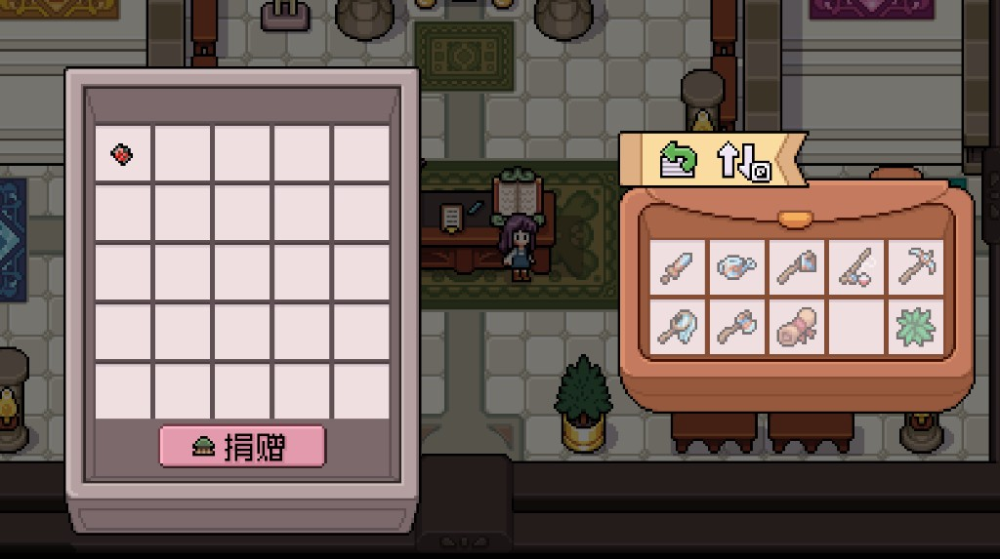
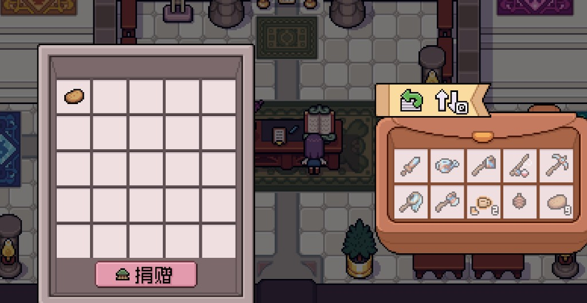
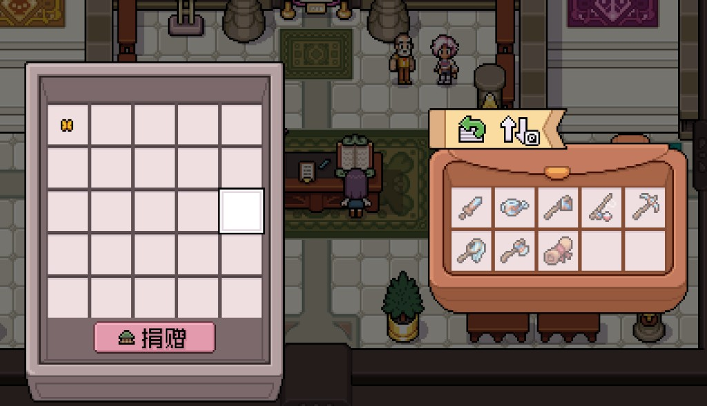

Quick answers
- Open the museum early so you recognize donate-able finds.
- First butterfly, fish, crop, artifact → consider donate.
- Errol quests may want specific forage—read mail.
- Completion can spill into later seasons.
- Never sell the last unknown item blindly.
Donate habit
When inventory is full of “what is this?”, walk to the museum wing. Our save donated potatoes, bugs, and forage as we found them—no all-day museum marathon.
Museum-adjacent quests
Berry and forage requests for Errol overlapped with museum thinking. Chest candidates first.
Safe to skip
- 100% wings in Spring
- Buying donations at ruinous prices
Screenshots from our save
Real Fields of Mistria shots from our first-season play. Captions in English; in-game UI language may differ.




FAQ
Duplicate donate?
Usually no—keep or ship extras.
Where is the museum?
Toward the Narrows / north town—follow the map landmark.
Unofficial fan guide. Not affiliated with NPC Studio. Verify details in your game version.